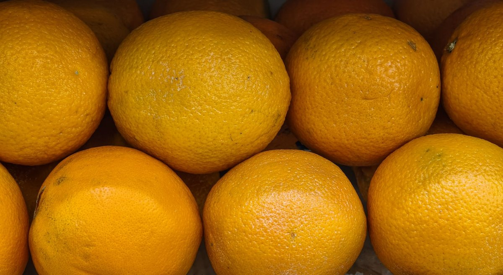

Scientists Discover A Surprising Link Between Vitamin C And Cancer Survival

Key takeaways
- When my doctor told me my gut microbiome was completely out of balance years ago, I panicked and started buying every mega-dose supplement I could find on the shelf.
- I spent months swallowing massive doses of synthetic vitamins, expecting a miracle, only to en
- Track what feels sustainable and adjust gradually.
When my doctor told me my gut microbiome was completely out of balance years ago, I panicked and started buying every mega-dose supplement I could find on the shelf. I spent months swallowing massive doses of synthetic vitamins, expecting a miracle, only to end up with an upset stomach and zero real results.
Recently, Scientists Discover A Surprising Link Between Vitamin C And Cancer Survival, and it completely changed how I look at nutrient absorption and cellular healing. Researchers at major US clinical centers found that high-dose intravenous vitamin C—not just oral supplements—can generate hydrogen peroxide in tissue, selectively targeting cancer cells while leaving healthy tissue intact.
This breakthrough highlights how critical proper nutrient delivery and metabolic pathways are for overall cellular longevity. I used to think taking a cheap chewable vitamin was enough, but science shows our body's internal delivery system matters just as much as the nutrient itself. You can read a related healthy tip to see how daily habits shape cellular defense.
Understanding these cellular mechanisms forced me to re-evaluate how I support my own body from the inside out. When your digestive tract is inflamed or imbalanced, your body struggles to absorb essential nutrients effectively, leaving you vulnerable. Check out another another practical guide on reducing daily systemic inflammation.
Scientists emphasize that while high-dose IV therapy is a specialized clinical treatment, maintaining peak nutrient transport requires a thriving gut environment. If your microbiome is compromised, even basic micronutrient transport pathways get bogged down. I found that incorporating a Daily Synbiotic Capsule into my routine helped smooth out my digestion, creating a strong baseline for metabolic efficiency and absorption.
Disclosure: This page may contain affiliate links.
Integrating science-backed daily protocols doesn't mean changing your entire life overnight. Try reviewing a similar wellness insight to build sustainable daily routines that stick.
The 2-Minute Win
Pair your vitamin C-rich whole foods (like bell peppers or kiwis) with healthy fats or a clean synbiotic daily to optimize intestinal wall absorption and support cellular health.
Don't fall into the trap of thinking more is always better when it comes to self-dosing single vitamins orally. Focus instead on keeping your baseline cellular health strong, staying hydrated, and nurturing your gut barrier so your immune system can actually use what you give it. Be sure to stay consistent with this approach over time for meaningful results.
Real wellness isn't about panicking over quick fixes; it's about consistently supporting your body's natural absorption and cellular repair systems.
Educational only — not medical advice. Always consult with a qualified healthcare provider before starting any new treatment protocol or high-dose supplementation regimen.
Take time to explore more longevity guides to keep your body resilient and energized every single day.
Recommended Reading
- Habits for Longevity: A Science-Backed Approach
- Watermelon's Secret Health Boost: What Scientists Just Found Out!
- Unlock Your Health: The Surprising Benefits of Daily Hydration for Americans
More in longevity
Stop Overcomplicating: Scientists Find 10 Different Diets Linked To Slower Aging
Scientists find 10 different diets linked to slower aging. Learn how simple food choices and restorative sleep can trans
Read article →Vitamin D Drug May Help Crack Pancreatic Cancer’S Protective Shield
Discover how a Vitamin D Drug May Help Crack Pancreatic Cancer’S Protective Shield and what modern research means for pr
Read article →